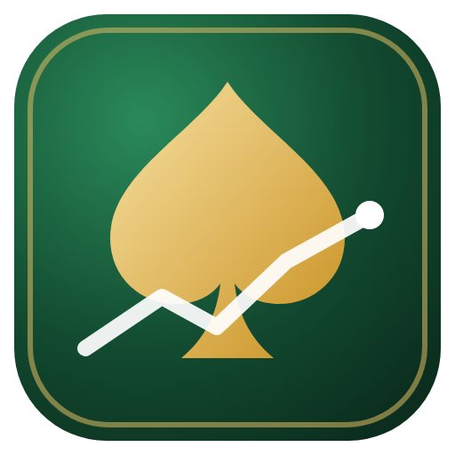
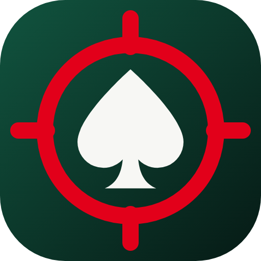
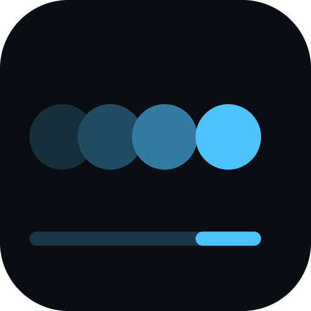
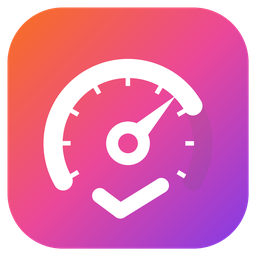
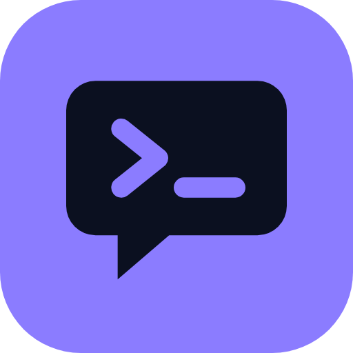

PC
MMA Manager
Gérez la carrière d’un agent et de son club dans un monde de MMA simulé.
Atelier indépendant
Jeux PC et mobile, logiciels, guides et vidéos.
Tout mon atelier, au même endroit.
10 créations
Gérez la carrière d’un agent et de son club dans un monde de MMA simulé.
Apprenez le poker en jouant un tournoi contre des adversaires virtuels avec un coach.
Télécharger pour WindowsQuatre chasseurs enquêtent sur les disparitions du village de Sombreval.
Explorez la forêt, récoltez des ressources et préparez-vous à la nuit.
Travaillez vos décisions au poker six joueurs à travers des situations corrigées.

PC
PCÉtudiez une situation de poker à partir de votre position, de votre tapis et de votre main.
Télécharger pour Windows
PCComparez la fluidité d’une même scène à plusieurs fréquences d’images.
Télécharger pour Windows
PC
Mobile et PCApprenez à utiliser l’IA avec des leçons courtes, des cas pratiques et des quiz.
Télécharger pour Windows · Télécharger pour AndroidAucune création ne correspond à cette recherche.